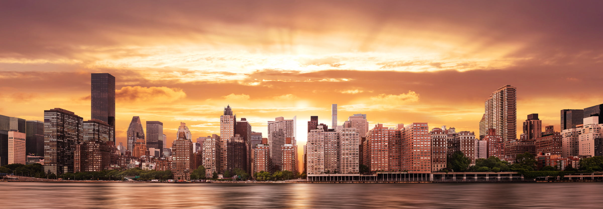

New York
New York, often called New York City to distinguish it from New York State, or NYC for short, is the most populous city in the United States. With a 2020 population of 8,804,190 distributed over 300.46 square miles (778.2 km2), New York City is also the most densely populated major city in the United States. Located at the southern tip of the State of New York, the city is the center of the New York metropolitan area, the largest metropolitan area in the world by urban area. With over 20 million people in its metropolitan statistical area and approximately 23 million in its combined statistical area, it is one of the world's most populous megacities. New York City has been described as the cultural, financial, and media capital of the world, significantly influencing commerce, entertainment, research, technology, education, politics, tourism, dining, art, fashion, and sports, and is the most photographed city in the world. Home to the headquarters of the United Nations, New York is an important center for international diplomacy, and has sometimes been called the capital of the world. Situated on one of the world's largest natural harbors, New York City is composed of five boroughs, each of which is coextensive with a respective county of the State of New York. The five boroughs—Brooklyn (Kings County), Queens (Queens County), Manhattan (New York County), the Bronx (Bronx County), and Staten Island (Richmond County)—were created when local governments were consolidated into a single municipal entity in 1898. The city and its metropolitan area constitute the premier gateway for legal immigration to the United States. As many as 800 languages are spoken in New York, making it the most linguistically diverse city in the world. New York is home to more than 3.2 million residents born outside the United States, the largest foreign-born population of any city in the world as of 2016. As of 2019, the New York metropolitan area is estimated to produce a gross metropolitan product (GMP) of $2.0 trillion. If the New York metropolitan area were a sovereign state, it would have the eighth-largest economy in the world. New York is home to the highest number of billionaires of any city in the world.